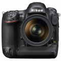

器材库 > 35mm画幅可换镜头数码相机 > D4S

规格总览
产品类型
35mm画幅可换镜头数码相机
发布日期
2014-02-25
厂家推荐价格
650,000.00 （日元）
停产
是
影像规格
影像传感器
CMOS
影像传感器尺寸
36.0 x 23.9mm
总像素
1661万
有效像素
1623万
影像处理器
EXPEED4
最大解像度
4928 x 3,280
静态图像格式
JPEG, RAW, NEF(RAW), NEF(RAW)+JPEG
静态图像尺寸
FX 格式: 4928 x 3,280 (L), 3696 x 2,456 (M), 2464 x 1,640 (S) / DX 格式: (24×16) ：3,200 x 2,128 (L), 2,400 x 1,592 (M), 1,600 x 1,064 (S)
画幅比
3:2, 4:3, 16:9, 5:4
短片格式
MOV, MPEG4-AVC/H.264
短片尺寸
1920 × 1080 ； 60p （逐行）、50p、30p、25p、24p •1920 × 1080 裁切； 30p、25p、24p •1280 × 720 ； 60p、50p •640 × 424 ； 30p、25p 60p、50p、30p、25p 及24p 时的实际帧频分别为59.94、50、29.97、25 及23.976 幅/ 秒
音频格式
线性PCM
除尘系统
清洁影像传感器、图像除尘参考数据
镜头和对焦
镜头卡口
Nikon F
兼容镜头
1)AF Nikkor (包括AF-S、DX、 VR、D/G)；2)D-型MF Nikkor：AF和部分曝光模式无效；3)非D/G型AF、AI-P Nikkor：AF(仅AI-P)、3D彩色矩阵测光和3D多区平衡填充闪光控制无效；5)Non-CPU AI Nikkor：可在[A]和[M]模式下使用矩阵测光、CW测光和点测光。
对焦系统类型
TTL Multi-CAM 3500
对焦点
51个对焦点（包括15个十字型感应器）
对焦模式
单点AF、动态区域AF（9、21 或51 个对焦点）、3D 跟踪、群组区域AF、自动区域AF
手动对焦
支持
曝光控制
测光系统
具有约9.1 万(91,000) 像素的RGB 感应器进行TTL 曝光测光
测光模式
中央重点测光, 多分区评价测光, 点测光
测光范围
矩阵测光或中央重点测光：-1至20EV •点测光：2至20EVEV
曝光模式
P（程序自动曝光）, A（光圈优先自动曝光）, S（快门速度优先自动曝光）, M（手动测光曝光）
快门类型
电子控制，纵走式，焦平面快门
快门速度
1/8,000至30秒 （以1/3、1/2或1 EV为步长调校），B门，闪光同步速度：1/250秒
曝光补偿
±5EV以1/3、1/2 或1 EVEV级调整
自动曝光锁
有
自动包围曝光
2 至9 幅，以1/3、1/2、2/3 或1 EV 为步长调校
ISO感光度
200, 800, 自动, 以1/3、1/2 或1EV 为步长在ISO 100-25600 之间进行微调。可在ISO 100 的基础上约减少0.3、0.5、0.7 或1EV（相当于ISO 50），或者在ISO 25600 的基础上约增加0.3、0.5、0.7、1、2、3 或4EV（相当于ISO 409600）；自动ISO 感光度控制可用
白平衡
日光, 白炽灯, 闪光灯, 色温调节, 阴天, 荧光灯, 阴影, 自动, 预设白平衡
自拍
10秒, 2秒, 5秒, 20秒
连拍
最高10 幅/ 秒（CL）或10-11 幅/ 秒（CH）
闪光灯
内置闪光灯
弹出式
闪光模式
慢速同步, 减轻/消除红眼, 减轻红眼慢速同步
闪光补偿
-3 至 +1EV以1/3、1/2 或1EVEV级调整
闪光同步模式
前帘同步, 后帘同步
外接闪光灯
SB系列闪光灯
取景器/显示屏
取景器
眼平五棱取景器
取景范围
100%
取景放大倍率
0.7倍
屈光度调节范围
-3至+1 m-1
反光镜
快速瞬回半透明
景深预视
有
LCD类型
低温多晶硅TFT LCD
LCD尺寸
3.2英寸
LCD像素
92.1万
视野率
100%
Live View
有
文件输入/输出
存储卡
CF, XQD
数据接口
USB2.0
视频/音频接口
HDMI 输出, Video 输出 (NTSC/PAL)
电源
电池
一块EN-EL18a 锂离子可充电电池
外接电源
EH-6b电源适配器；需要EP-6照相机电源连接器（另购）
机身规格
颜色
黑色
尺寸
160 × 156.5 × 90.5mm
重量
1180gg
其它
配件端口
GPS装置
支持语言
中文（简体）, 中文（繁体）, 日语, 捷克语, 丹麦语, 荷兰语, 芬兰语, 法语, 德语, 印度尼西亚语, 意大利语, 韩语, 挪威语, 波兰语, 葡萄牙语, 俄语, 西班牙语, 瑞典语, 土耳其语
supergrass2016-03-17 08:394.94 分
操作性 5.00功能性 5.00美观性 5.00趣味性 5.00耐用性 5.00性价比 4.50解像力 5.00色彩还原 5.00
阿番2014-12-23 17:054.81 分
操作性 4.50功能性 5.00美观性 5.00趣味性 5.00耐用性 5.00性价比 4.00解像力 5.00色彩还原 5.00
sxm2014-10-15 14:49
威斯达2014-08-05 22:494.69 分
操作性 5.00功能性 4.50美观性 4.50趣味性 4.50耐用性 4.50性价比 4.50解像力 5.00色彩还原 5.00
lonnylam2014-04-05 00:394.81 分
操作性 5.00功能性 5.00美观性 5.00趣味性 4.50耐用性 5.00性价比 4.00解像力 5.00色彩还原 5.00
seraphzjs2014-03-24 09:364.81 分
操作性 5.00功能性 5.00美观性 5.00趣味性 5.00耐用性 5.00性价比 4.00解像力 5.00色彩还原 4.50
wangh88882014-03-14 10:465 分
操作性 5.00功能性 5.00美观性 5.00趣味性 5.00耐用性 5.00性价比 5.00解像力 5.00色彩还原 5.00
兰青2014-03-08 19:244.75 分
操作性 5.00功能性 5.00美观性 5.00趣味性 5.00耐用性 5.00性价比 4.00解像力 4.50色彩还原 4.50
武汉黑豹2014-03-08 12:304.56 分
操作性 5.00功能性 5.00美观性 5.00趣味性 4.50耐用性 5.00性价比 3.00解像力 4.50色彩还原 4.50
产品图 / 样片
评测 / 相关文章
- 详细内容 （存档）
- 高效不含糊 尼康旗舰D4S详细评测 （存档）
- ［资讯］储存卡兼容性不足 尼康D4s用户引起注意 （存档）
- ［资讯］尼康发布旗舰级FX格式数码单反相机D4S （存档）
- ［资讯］尼康D4S官方样片欣赏 （存档）
相关文章
- ［资讯］经典延续 尼康D4s发布新固件 （原站已下线）
- ［资讯］尼康官方宣布D4s停产 （原站已下线）
- ［资讯］改进无线遥控器兼容性 尼康D4S固件更新 （原站已下线）
- ［资讯］储存卡兼容性不足 尼康D4s用户引起注意 （存档）
- ［试用］高效不含糊 尼康旗舰D4S详细评测 （存档）
- ［资讯］尼康D4S （存档）
- ［资讯］尼康发布旗舰级FX格式数码单反相机D4S （存档）
- ［资讯］尼康D4S官方样片欣赏 （存档）